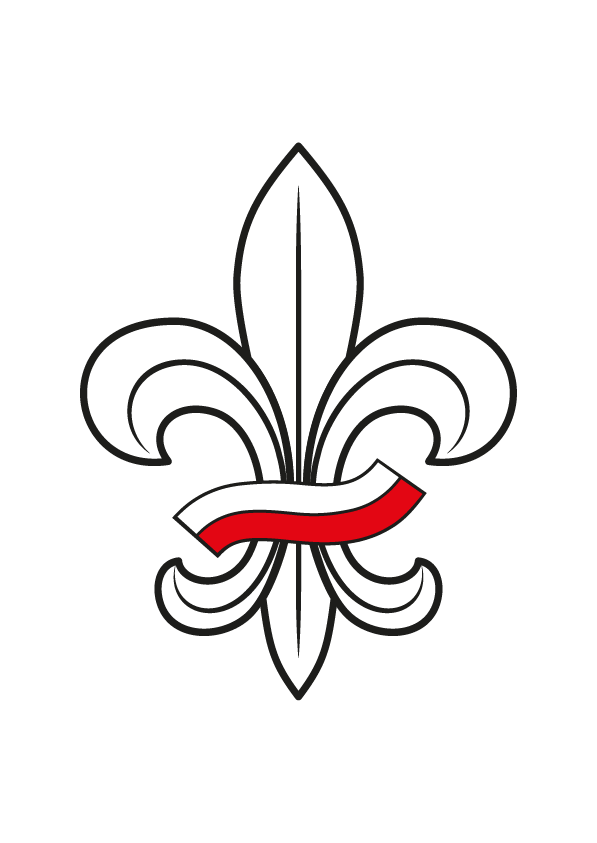

- Odzyskuje pamięć obiektów na heapie, które nie są już osiągalne.
- Działa automatycznie; moment uruchomienia i odzyskania pamięci nie jest gwarantowany.
- Nie zwalnia zasobów zewnętrznych, takich jak połączenia czy strumienie — te należy zamykać.
- Pomiar zajętości heapu przed i po odczycie jest chwilowy, zależny m.in. od GC; nie pokazuje szczytowego zużycia.
JVM · ORM · JDBC
Strumienie zamiast powodzi:
porównanie wariantów
Pamięć JVM, mapowanie obiektowe i sposoby pracy z danymi.
JavaHibernatePostgreSQL
O mnie

Senior Software Developer
Instruktor w ZHR
Bartosz Błyszcz
Senior Software DeveloperAlior Bank

Prowadzący Kręgu Harcerstwa Starszego "Źródło"ZHR
 bartosz-blyszcz
bartosz-blyszcz
01 / Podstawy
JVM i schemat pamięci
- JVM uruchamia bytecode Java i zarządza jego wykonaniem.
- Heap — obiekty i encje; współdzielony przez wątki.
- Stosy wątków — ramki metod, zmienne lokalne i odwołania.
- Metaspace — metadane klas; poza heapem.
- PC i stos natywny — stan wykonywania wątku oraz obsługa metod natywnych.
- Pamięć natywna obejmuje m.in. bufory bezpośrednie i zasoby JVM.
Podział heapu na generacje jest typowy, ale szczegóły zależą od JVM i garbage collectora.
JVM +--------------------------------------+ | Współdzielone obszary | | Heap (obiekty i tablice; GC) | | +------------------------------+ | | | Young generation | | | | Eden | Survivor 0 | Survivor 1| | | +------------------------------+ | | | Old generation | | | +------------------------------+ | | Metaspace / obszar metod | | metadane klas | +--------------------------------------+ | Wątek A | Wątek B | | Java stack | Java stack | | PC register | PC register | | Native method stack | Native stack | +--------------------------------------+ | Pamięć natywna, np. bufory direct | +--------------------------------------+
01 / Podstawy
Garbage Collector
01 / Podstawy
ORM
- ORM mapuje tabele i kolumny relacyjnej bazy na obiekty i pola w aplikacji.
- JPA definiuje standard mapowania; Hibernate jest jego implementacją używaną w projekcie.
- Relacje encji mogą być ładowane od razu (EAGER) lub na żądanie (LAZY).
- Persistence context śledzi encje i zarządza ich stanem w ramach pracy z bazą.
- Zaleta: praca na obiektach; koszt: dodatkowe zapytania, obiekty i pamięć.
01 / Podstawy
Stany encji Hibernate
- Transient / new — nowy obiekt, nieśledzony przez persistence context.
- Managed / persistent — encja śledzona; zmiany mogą zostać zapisane przy flush/commit.
- Detached — encja odłączona; zmiany nie są automatycznie śledzone.
- Removed — encja oznaczona do usunięcia przy flush/commit.
- Przykładowe przejścia:
persist→ managed,detach/clear→ detached,remove→ removed.
01 / Podstawy
JdbcTemplate
- Springowy interfejs do wykonywania jawnego SQL bez mapowania encji ORM.
- Aplikacja określa kolumny, zapytanie i sposób mapowania wiersza na obiekt.
- W projekcie
queryForStreamodczytuje strumieniowo kursor tylko do przodu. fetchSize = 1000jest wskazówką dla sterownika co do pobierania wierszy, nie liczbą zapytań SQL.- Strumień należy zamknąć; odczyt kursora PostgreSQL odbywa się w transakcji.
02 / Porównanie
Założenia doświadczenia
- Porównanie pięciu sposobów odczytu całej tabeli
wypozyczenia. - Każdy request uruchamia osobną transakcję tylko do odczytu; warianty należy uruchamiać pojedynczo.
- Wspólny punkt porównania: liczba wierszy i suma kontrolna złożona z UUID oraz daty wypożyczenia.
- Rejestrowane są czas odczytu i chwilowa zajętość heapu przed i po.
- Wyniki zależą m.in. od JVM, GC, sterownika, bazy i rozgrzania aplikacji; pomiar pamięci nie jest maksimum.
- Czas nie obejmuje zatwierdzenia transakcji ani wysłania odpowiedzi HTTP.
- Odczyty nie są równoważne pod względem zakresu pobieranych danych: LAZY nie inicjalizuje relacji, a pozostałe warianty ładują również powiązane dane.
02 / Warianty odczytu
EAGER
POST /api/wypozyczenia/odczyt/EAGERfindAll()z grafem: użytkownik, egzemplarz, książka i autorzy.- Pokazuje koszt pobrania od razu powiązanego grafu encji.
- Złączenia mogą powielać wiersze SQL, np. dla książek z wieloma autorami.
02 / Warianty odczytu
LAZY
POST /api/wypozyczenia/odczyt/LAZYfindAll()bez grafu encji; relacje pozostają niezaładowane.- Ładuje listę encji wypożyczeń, ale nie inicjalizuje ich relacji.
- Porównanie z EAGER dotyczy innego zakresu pobieranych danych.
02 / Warianty odczytu
HIBERNATE_STREAM
POST /api/wypozyczenia/odczyt/HIBERNATE_STREAM- Strumieniowy odczyt projekcji Hibernate obejmującej wypożyczenie, użytkownika, egzemplarz, książkę i autorów, z
readOnlyifetchSize = 1000. - Przetwarzanie wierszy w locie; projekcja udostępnia pełny powiązany graf danych.
02 / Warianty odczytu
HIBERNATE_BATCH
POST /api/wypozyczenia/odczyt/HIBERNATE_BATCH- Jak w strumieniu Hibernate: pełna projekcja wypożyczenia i powiązanych danych,
readOnly,fetchSize = 1000, przetwarzanie w locie. - Dodatkowo
EntityManager.clear()po każdych 1000 rekordów. - Czyszczenie ogranicza narastanie persistence context; nazwa wariantu nie oznacza wsadowego zapisu.
02 / Warianty odczytu
JDBC_BATCH
POST /api/wypozyczenia/odczyt/JDBC_BATCH- Jawny SQL przez
JdbcTemplate; kursor tylko do przodu ifetchSize = 1000. - Mapuje wypożyczenie, użytkownika, egzemplarz, książkę i autorów; wiersze są grupowane według pełnego klucza wypożyczenia.
- Metadane książki są tekstem JSON; sortowanie potrzebne do grupowania może obciążać bazę.
- Bez tworzenia encji Hibernate i persistence context.
03 / Uruchom odczyt
List + EAGER
03 / Uruchom odczyt
List + LAZY
03 / Uruchom odczyt
STREAM
03 / Uruchom odczyt
STREAM BATCH
03 / Uruchom odczyt